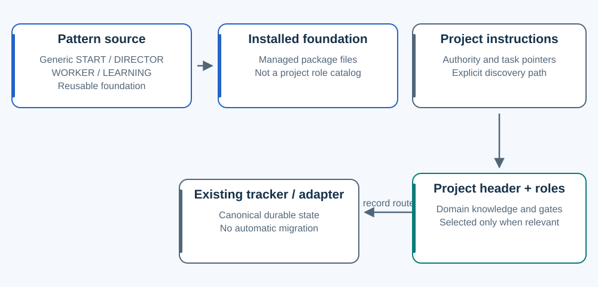

The foundation and the project stay separate.
Generic method files are reusable. Project roles, authority and canonical knowledge belong to the project.

| Layer | Example | Owner / loading |
|---|---|---|
| Pattern source | START, DIRECTOR, WORKER, LEARNING | Reusable generic contract. Installation copies the selected managed package. |
| Project authority and discovery | AGENTS task pointer; departments/experience/HEADER.md | Project-owned. The pointer makes the header discoverable at its trigger. |
| Project knowledge | ART.md, ENGINEERING.md, INDEPENDENT_TEST.md; accepted craft reference | Read for selected work, with its actual authority and reference requirements. |
| Project durable state | Starter state, or an existing tracker and adapter | Keep one canonical route. An older .producer layout is not permission to create a second ledger. |
What an agent sees
It loads the selected foundation and applicable project guards. At task time it follows the relevant header, selected responsibility and exact task references. It discovers canonical knowledge scopes and reads applicable accepted lessons before acting.
It does not need every role's history at startup. Existing projects can have broader explicit requirements until a reviewed integration preserves and rephases them. Mature trackers and local adaptations are preserved through explicit integration.